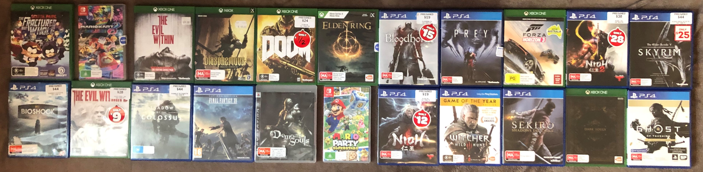

Section One
Books I Like
I enjoy reading when I have free time, with my favourite manga being Berserk. There are other pieces of literature that I like reading, which include:
| • Berserk by Kentaro Miura |
• Vagabond by Takehiko Inoue |
| • Vinland Saga by Makoto Yukimura |
• Musashi by Eiji Yoshikawa |
| • Gantz by Hiroya Oku |
• The Broken Empire Trilogy by Mark Lawrence |
| • Chainsaw Man by Tatsuki Fujimoto |
• Blade of the Immortal by Hiroaki Samura |
Music I Like
The genres of music I listen to are similar, but they all have specific subgenres. Here’s a list of some of the genres of music I listen to with song examples:
- Pop Rock
- Stellar by Incubus
- Big Machine by Goo Goo Dolls
- Semi-Charmed Life by Third Eye Blind
- Rock
- The Greatest View by Silverchair
- Falling Away from Me by Korn
- The Violence by Rise Against
- Pop Punk
- Exhale by Rarity
- Rose by Telltale
- Midnight City by M83
- Progressive Metal
- Of Mind – Nocturne by TesseracT
- The Suffering by Coheed and Cambria
- Supermassive Black Hole by Muse
- Alternative/Indie
- New Person, Same old Mistake by Tame Impala
- FXMLDR by Thank you Scientist
- Smile by Winston Surfshirt
- Metal
- Portrait #1 by Twelve Foot Ninja
- Tears Don’t Fall by Bullet for My Valentine
- Time Bomb by Cane Hill
- Post-Hardcore
- What It Is to Burn by Finch
- THICC THICCLY by Bilmuri
- MONOMANIA by The World Alive
- R&B/Soul
- Royal Flush by Bad Rabbits
- SLOW DANCING IN THE DARK by Joji
- Moon Undah Water by Puma Blue
Movies and Shows I Like
I don't really watch TV a lot, but I'll watch it if a new season of a show I like has come out, or if I'm watching a movie with friends. There are still shows and movies that I enjoy watching, and some of these would be:
| Shows |
|
Movies |
|
| • Final Space |
• The Witcher |
• Deuce Bigalow: Male Gigolo |
• Deuce Bigalow: European Gigolo |
| • Brooklyn Nine-Nine |
• Top Gear |
• The Naked Gun 1 |
• The Naked Gun 2 1/2 |
| • The Grand Tour |
• Bojack Horseman |
• The Naked Gun 33 1/3 |
• Scary Movie 1 |
| • Stranger Things |
• Merlin |
• Scary Movie 3 |
• Scary Movie 2 |
| • South Park |
• Berserk |
• The Dark Knight |
• The Batman |
| • Yu Yu Hakusho |
• Rick and Morty |
• Men in Black |
• How the Grinch Stole Christmas |
Games I Like
Playing video games is one of my most favourite things to do, and I'll spend most of my free time playing a game. My favourite game trilogy is Dark Souls, but there are other games I enjoy playing. These would be:
| • Dark Souls Remastered |
• Sekiro: Shadows Die Twice |
• Prey |
| • Dark Souls II: Scholar of the First Sin |
• Bloodborne |
• Nioh 2 |
| • Dark Souls III |
• Blasphemous |
• Nioh |
| • The Elder Scrolls V: Skyrim |
• DOOM |
• Ghost of Tsushima |
| • South Park: The Stick of Truth |
• South Park: The Fractured but Whole |
• The Evil Within |
| • The Evil Within 2 |
• Shadow of the Colossus |
• Demon’s Souls |
| • Banjo-Kazooie |
• Conker’s Bad Fur Day |
• The Witcher 3: Wild Hunt |
| • Forza Horizon 3 |
• Mario Kart 8 Deluxe |
• BioShock: The Collection |
| • Elden Ring |
• Mario Party Superstars |
• Final Fantasy XV |
